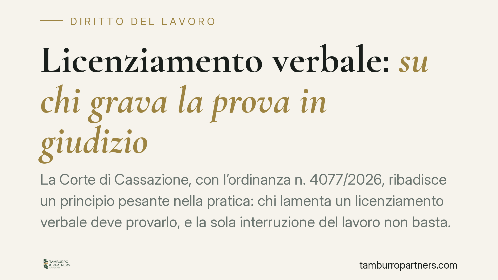

Licenziamento verbale: su chi grava la prova in giudizio
La Corte di Cassazione, con l'ordinanza n. 4077/2026, ribadisce un principio pesante nella pratica: chi lamenta un licenziamento verbale deve provarlo, e la sola interruzione del lavoro non basta. Se il datore mantiene in regola i contributi e non comunica la cessazione, il dubbio gioca a sfavore del lavoratore. Vediamo cosa cambia e come tutelarsi.

Il caso e il principio
Il licenziamento verbale è il recesso del datore di lavoro comunicato a voce, senza atto scritto. La legge lo considera privo di effetto, perché l'art. 2, comma 1, della Legge 604/1966 impone la forma scritta per la comunicazione del licenziamento. Il problema non è quindi la validità del recesso orale — che è radicalmente inefficace — ma la sua esistenza: occorre dimostrare che un licenziamento, anche solo a parole, c'è stato davvero.
Con l'ordinanza n. 4077/2026 la Corte di Cassazione ha confermato che questa dimostrazione spetta integralmente al lavoratore. Si applica la regola generale dell'art. 2697 del codice civile: chi fa valere un diritto in giudizio deve provare i fatti che lo fondano. Chi sostiene di essere stato licenziato a voce deve quindi provare l'atto di recesso, non limitarsi a lamentare di non lavorare più.
Perché la cessazione della prestazione non basta
Il nodo è questo: smettere di andare al lavoro è un fatto neutro. Può dipendere da un licenziamento verbale, ma anche da dimissioni, da un'assenza ingiustificata o da un abbandono del posto. Senza prova dell'iniziativa datoriale, il giudice non può presumere il licenziamento.
La Corte valorizza alcuni indici processuali che pesano a favore del datore quando il rapporto resta formalmente aperto:
- il versamento regolare dei contributi previdenziali anche dopo la presunta estromissione;
- la mancata comunicazione di cessazione del rapporto agli enti (Centro per l'impiego, INPS);
- l'assenza di qualsiasi procedura disciplinare o di atti riconducibili a una volontà di recesso.
In presenza di questi elementi, e in mancanza di prova contraria, la domanda del lavoratore può essere respinta per difetto di prova. Va ricordato che il giudice del lavoro conserva poteri istruttori d'ufficio ex art. 421 del codice di procedura civile, ma si tratta di uno strumento integrativo: non supplisce alla totale assenza di allegazioni e riscontri da parte di chi agisce.
Le implicazioni pratiche
Per il lavoratore il messaggio è chiaro: la posizione processuale è scomoda. Davanti a un licenziamento pronunciato a voce, magari senza testimoni o con testimoni legati al datore, il rischio di non riuscire a provare il fatto è concreto.
Va però distinto il profilo probatorio da quello delle tutele. Se il licenziamento orale viene provato, la protezione è forte. Per i rapporti soggetti al regime a tutele crescenti, l'art. 2 del D.Lgs. 23/2015 prevede per il licenziamento intimato in forma orale la reintegrazione piena, con condanna al risarcimento: il recesso verbale è assimilato all'inefficacia/nullità, non è trattato come un semplice vizio di forma minore. Il problema, insomma, non è la conseguenza del licenziamento orale una volta accertato, ma arrivare ad accertarlo.
Un punto delicato riguarda i termini. Per il licenziamento scritto opera il regime di decadenza dell'art. 6 della Legge 604/1966: impugnazione stragiudiziale entro 60 giorni e deposito del ricorso (o richiesta di conciliazione) entro i successivi 180. Per il licenziamento orale, invece, l'orientamento prevalente esclude l'applicazione automatica di questa decadenza, trattandosi di atto inefficace per difetto di forma: l'azione resta esperibile nei termini di prescrizione dei diritti fatti valere. È però una materia discussa in giurisprudenza. Per prudenza, consigliamo di non attendere e di muoversi come se i termini decorressero.
Cosa fare in concreto
- Documentate subito l'accaduto. Annotate data, ora, luogo e presenti al momento della comunicazione verbale; raccogliete messaggi, email, chat o note audio che possano confermarla.
- Precostituite prova testimoniale. Individuate colleghi o terzi presenti e verificatene la disponibilità; una testimonianza coerente è spesso l'elemento decisivo.
- Inviate una comunicazione scritta di disponibilità a riprendere servizio (raccomandata o PEC), dichiarando di considerare il rapporto ancora in essere. Serve a neutralizzare l'ipotesi di assenza ingiustificata o abbandono e a cristallizzare la vostra posizione.
- Verificate la posizione contributiva e gli adempimenti. Controllate su INPS se risultano cessazioni o variazioni; ogni incongruenza tra il comportamento del datore e la sua versione è un indizio utile.
- Agite senza indugio, con assistenza legale. Data l'incertezza sul regime decadenziale, muovetevi tempestivamente e fate valutare a un professionista la strategia probatoria più solida nel caso concreto.
---
*Contributo informativo a cura di Tamburro & Partners - Avv. Giuseppe Tamburro. Non costituisce parere legale.*
Ogni storia di lavoro ha i suoi tempi.
Se gestisci HR e vuoi un confronto su contenzioso, ispezioni o licenziamenti, scrivi allo studio. Ti rispondiamo entro un giorno lavorativo.